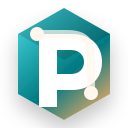

State is hard to see
Pods, containers, logs, stats, scans, and agent health live in different places.

PoDorel pitch deckRun pods, inspect logs, deploy templates, watch resource use, and keep security posture visible from one focused web console.
People bounce between terminals, logs, systemd user services, scripts, Compose folders, scanner output, and memory numbers that are hard to compare.
Pods, containers, logs, stats, scans, and agent health live in different places.
Uncapped memory, unlimited scaling, missing scans, and ad hoc shell access become invisible risks.
People want simple operations without adopting a full Kubernetes platform.
When something breaks, the useful context is usually buried across commands and services.
PoDorel gives the operator a single place to understand what is running, what changed, what is safe, and what needs attention.
Start, stop, restart, inspect containers, follow logs, and read current resource pressure.
Launch common pods and Compose stacks with clearer defaults and fewer copy-paste mistakes.
Surface scanner state, image digest checks, host package updates, and audit events.
A host agent speaks to the right rootless Podman session without turning everything into root.
HTTPS-ready configuration, passkeys, CSRF protection, and admin-gated sensitive actions.
Diagnostics, correlation IDs, agent health layers, and support bundles reduce guesswork.
PoDorel is built around the daily loop: observe, decide, act, verify, and leave a trace.
"I do not want a bigger platform. I want my local containers to stop being mysterious."PoDorel turns that feeling into an operational surface.
A Go web service, a per-user agent, SQLite state, and an Angular UI. Nothing exotic, no cluster requirement, no hidden control plane.
Operators can see what is running and what needs attention without decoding a dozen commands.
Pods and Compose stacks become repeatable instead of living only in someone's shell history.
Memory caps, scale warnings, scanner status, HTTPS, passkeys, and audit events stay visible.
A friendly way to run useful services without losing track of them.
Give developers a clean view of local service stacks and logs.
Run internal tools with auditability and safer defaults.
Keep local services visible where a full cluster is too much.
It is not trying to replace Kubernetes. It is giving rootless Podman the human-facing console it deserves.